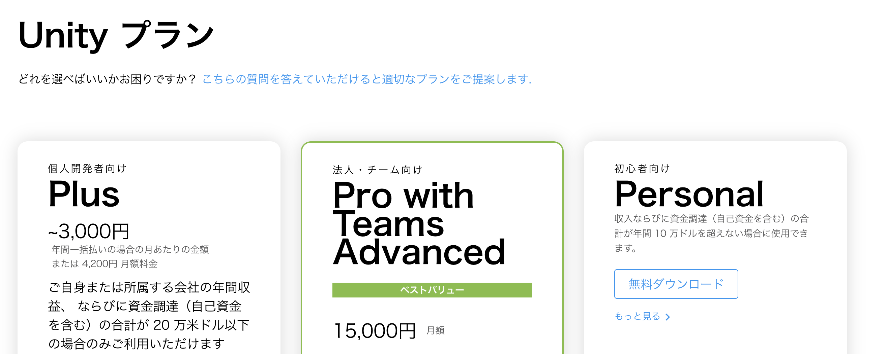
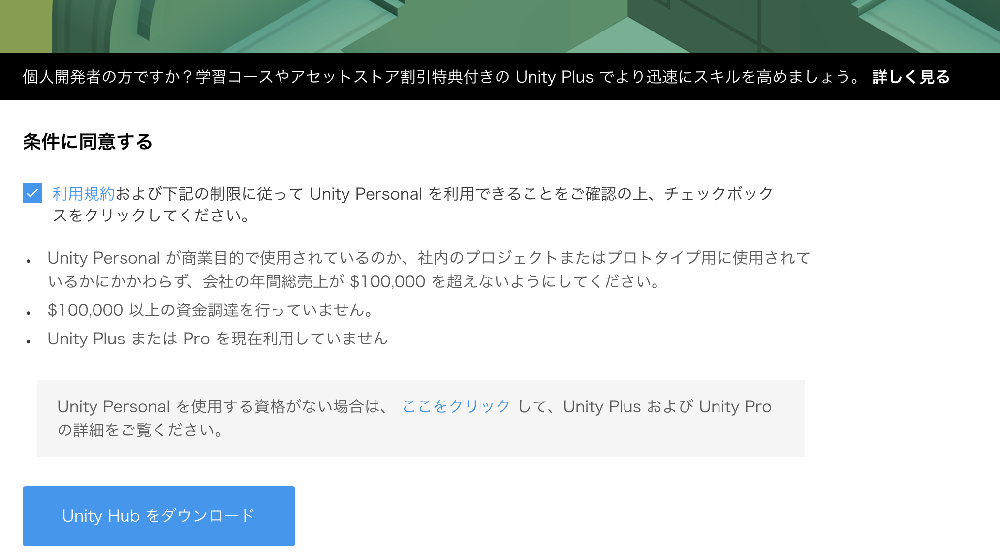
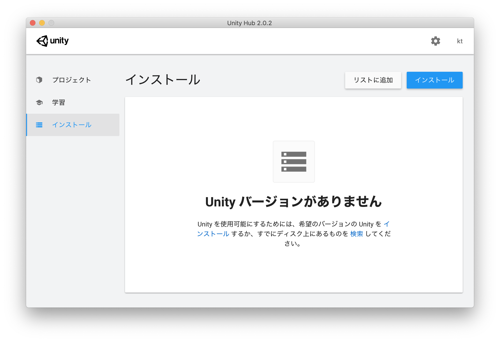
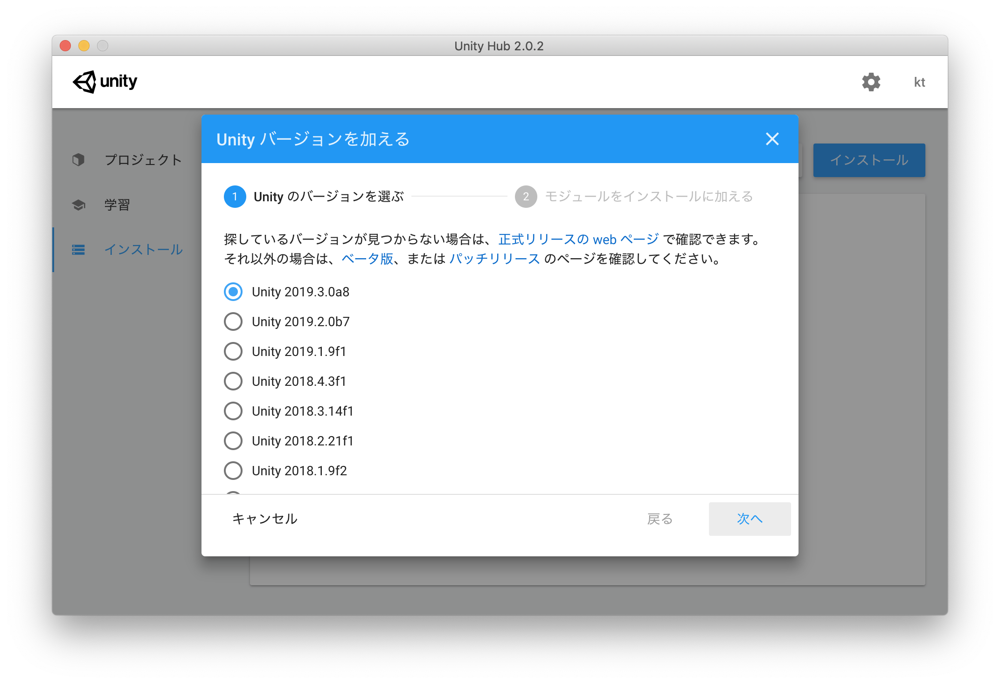
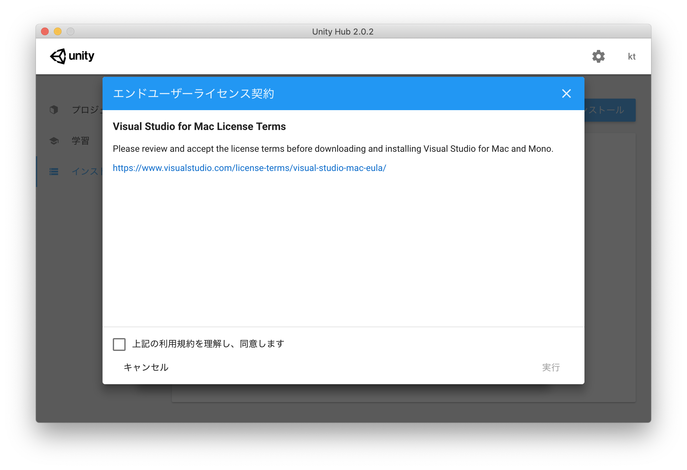
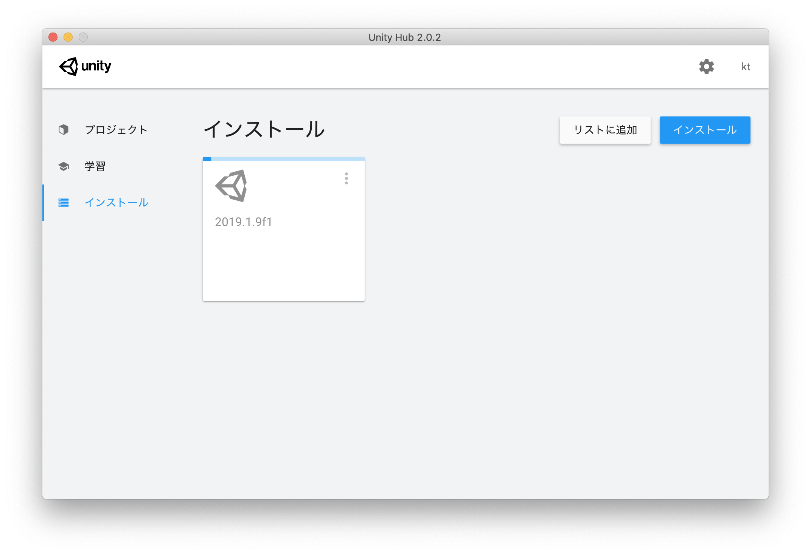
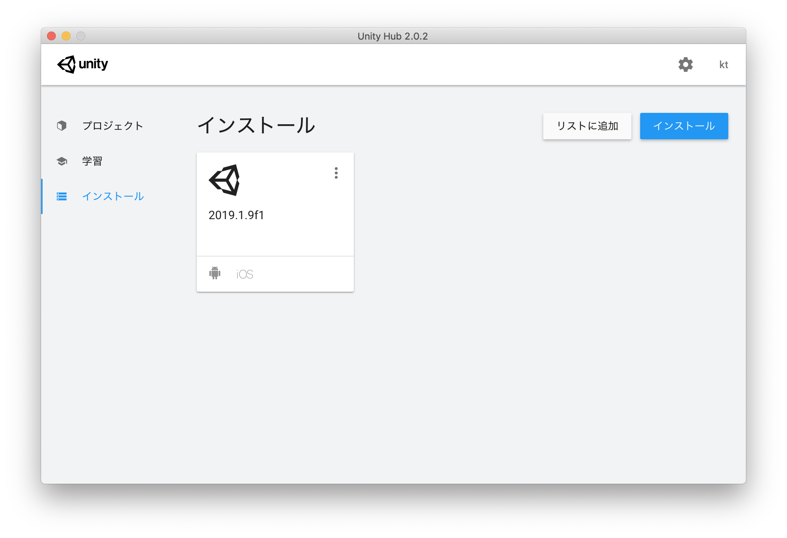
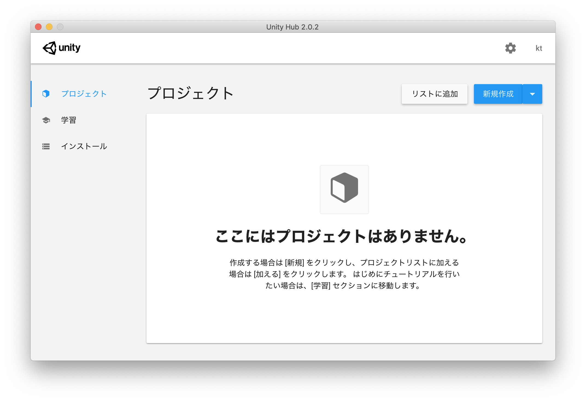
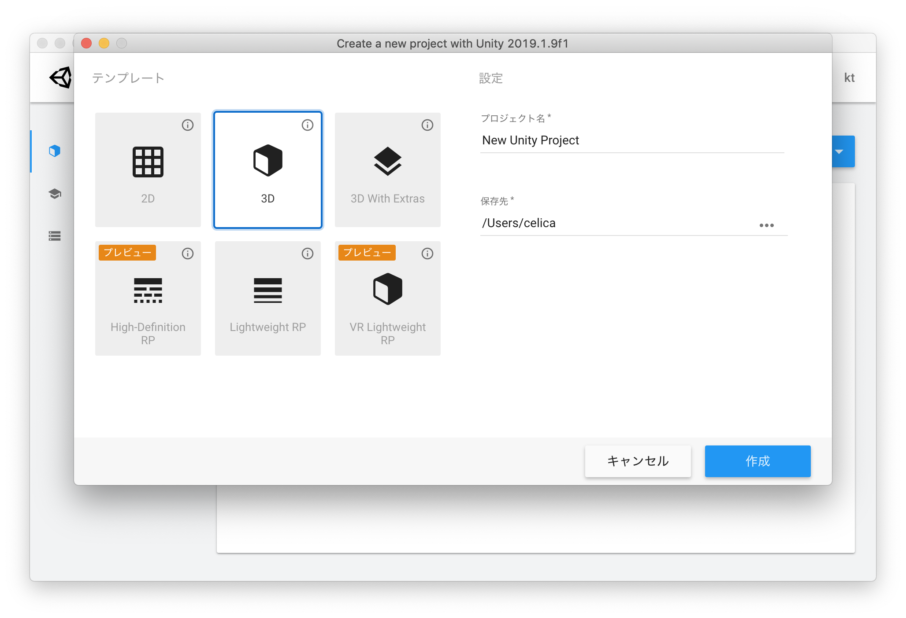

頑張らないために頑張る
頑張りたくないので楽できるように頑張ります
Unity Hubを使ってUnityをインストールする
Unityって何さ
世界で最も広くつかわれているゲーム開発エンジン。 様々な機能を備えたエディターと、業界で最も幅広いプラットフォームへのサポートを利用して、ゲームやインタラクティブなコンテンツを制作する方法を学びましょう。
「ゲーム開発エンジン」とは、画面描写、効果音やBGMなどの音楽管理、ステータスなどの各種データ管理などを総合して開発できる環境のこと。ただ、昨今ではゲームだけでなく映像制作にも用いられてますし、3Dに強いという特徴を生かして建築設計にも活用されているようです。すげぇ。
2Dを多用した映像制作ではちょっとアレかもしれませんが、3Dがメインならリアルタイムで3Dレンダリングが可能なUnityの強みを活用できそうです。Unityオフィシャルを始めとしてナレッジも多いですし、販売されているテキストも充実しているのも、Unityの強みかもしれません。
何はともあれ、まずは環境を整備しようと思います。今回はインストールについて。
環境
- macOS Mojave 10.14.5
なお、インストールする対象はUnity 2019.1版とします。
エディション
Unityには現在（2019年7月10日）エディションが3パターン存在します。
| 名称 | 月額 | 条件 |
|---|---|---|
| Personal | 無料 | 収入ならびに資金調達（自己資金を含む）の合計が年間10万ドルを超えない場合 |
| Pro with Teams Advanced | 15,000円 | 条件なし |
| Plus | ～3000円 | 個人・法人問わず、年間収益ならびに資金調達（自己資金を含む）の合計が20万米ドル以下の場合 |
エディション構成あるいは月額は、ある程度のスパンで更新されると思うので、Unityオフィシャルを参照していただくことを強くオススメします。
とりあえずここでは、Personalエディションを選択します。
インストール手順
Unityは基本的に直接インストーラーをダウンロードせず、Unity Hubと呼ばれるソフトを経由してインストールします。まずはそのUnity Hubをインストールするところから。
Unity Hubのダウンロード
Unityオフィシャルから「はじめる」をクリックします。

プランが表示されます。ここではPersonalを選択します。

「利用規約および〜」の部分にチェックを入れると、ボタンが活性化されてUnity Hubのダウンロードができるようになります。

ダウンロードしたらインストールします。MacへのインストールはApplicationsのフォルダーにコピーするだけです。
ダウンロードするUnityの選択
Unity Hubのインストールが終わったら、起動します。

この状態ではまだUnity本体はインストールされていません。ダウンロードもされていません。そこで、左の「インストール」をクリックします。

右上の「インストール」ボタンをクリックします。すると現時点（2019年7月）でインストールが可能なバージョンの一覧が表示されます。

とくにこだわりがなければ最新の安定版をインストールします。
一緒にインストールするモジュールの選択
本体のバージョンを選択し「次へ」をクリックすると、今度は本体と同時にインストールするモジュールを選択できます。自分は「Android Build Support」「iOS Build Support」の2つを選択しました。とくに深い意味はありません。なんとなく必要になりそうだな・・・と思ったので。なお、Dev toolsのVisual Studio for Macは最初から選択されています。
なお、ここで選択しなくても後で追加できるので、必要性を感じなければ選択しなくても何ら問題ありません。
選択し終わったら「次へ」をクリック。

ライセンス契約
ライセンス契約の画面です。おもむろに同意します。そして「実行」をクリックします。

すると、自動的にダウンロードが始まります。

しばらく放置しておけばダウンロードとインストールが完了します。

インストールが終わったら
左側の「プロジェクト」から「新規作成」をクリックします。

するとテンプレート画面が開きます。ここから新規作成すればいいわけですね。

まとめ
Unityのインストールがこれで完了しました。なお、アップデートなどもUnity Hubを利用することになります。
さあ、あとはコーディングするだけです。するだけです。するだけだってば。